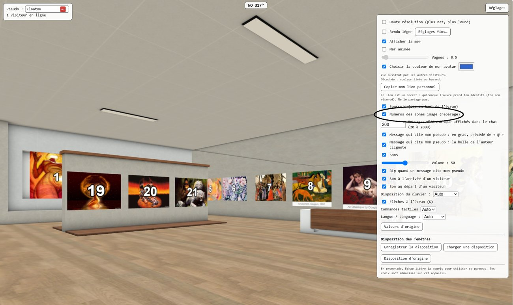

Comment marche la galerie de tableauxHow the picture gallery works
aide.html : une aide générique à modifier pour présenter votre galerie. Vous pouvez supprimer galerie.html de site avant de publier (et le lien qui y mène, en tête de aide.html).Le principe est de pouvoir mettre à jour simplement sa galerie de photos.
Le bâtiment 3D de la galerie est préparé avec 30 zones pour ces photos (de 1 à 30). Il suffit de mettre ses photos dans le dossier « medias », en leur donnant le nom correspondant, de 1.jpg à 30.jpg, pour qu'elles aillent sur la zone correspondante.
1. Remplacer ou ajouter une image
- Les images sont dans
medias/. Le tableau n° 7 correspond au fichier7.jpg. - Remplacez le fichier par une autre image du même nom : elle apparaît à la prochaine visite, sans vider le cache du navigateur.
- Formats essayés, dans cet ordre :
jpg, jpeg, png, webp, gif, avif. - Écrivez les noms en minuscules (
2.jpg, pas2.JPG) : sous Windows la casse ne compte pas, mais sur la plupart des hébergements2.jpget2.JPGsont deux fichiers différents, et le tableau resterait vide. - Les zones image sont réglées pour que leur hauteur s'adapte aux proportions de l'image affichée : une image large donne un tableau large, une image haute un tableau haut, sans déformation.
2. Les légendes
Une légende peut s'afficher sous chaque photo. Pour en donner une, mettez à côté de la photo un fichier texte du même nom : 9.txt pour 9.jpg. La première ligne non vide du fichier (en UTF-8) devient la légende. Sans fichier texte, aucune légende n'apparaît.
Autre possibilité : écrire la légende dans le nom de la photo, après un tiret (9-Mon_titre.jpg donne la légende « Mon titre » : le _ devient une espace).
3. Repérer les emplacements des photos
Pour savoir où ira chaque photo, ouvrez les Réglages de la galerie (bouton en haut à droite) et cochez « Numéros des zones image (repérage) » : un gros numéro s'affiche devant chaque emplacement, même s'il est encore vide. Décochez la case pour les faire disparaître (elle se décoche aussi toute seule à chaque ouverture de la galerie).

4. Ce qui fixe le nombre et la place des tableaux
Les zones (emplacement sur le mur, orientation, largeur w, hauteur h) sont enregistrées dans galerie.zones.json. Avec h = 0, la hauteur suit la proportion de l'image. Déplacer, ajouter ou supprimer un tableau se fait dans l'éditeur de zones du viewer de Web_3d (glb-viewer.html, outil séparé), qui écrit ce fichier : la page exportée de la galerie, elle, ne sert qu'à visiter.
Tant que vous ne changez que le contenu de medias/, aucun outil n'est nécessaire.
Deux zones image ont un rôle à part : le panneau « Galerie » au centre du bâtiment (enseigne.jpg, une simple enseigne : mettez-y le nom de votre galerie) et le petit panneau « ? » sur le devant du comptoir (aide.jpg). Un clic sur ce petit panneau ouvre aide.html, l'aide des visiteurs : modifiez-la pour présenter votre galerie, en gardant son nom. Cette page-ci, galerie.html, est la documentation du créateur.
5. Montrer la galerie : trois façons
| Formule | Pour | Ce qu'il faut |
|---|---|---|
| 1. Chez soi, ou sur une clé USB | essayer, ou montrer la galerie sur votre ordinateur | Windows : double-cliquer sur lancer-galerie.bat (à la racine du paquet). Rien à installer. |
| 2. Sur un site web | la montrer à tout le monde | un hébergement web où copier le contenu du dossier site. Rien à installer sur le serveur. Pas de présence. |
| 3. Avec présence | voir les autres visiteurs et tchatter | en plus, le serveur de présence (section 6). |
1. Chez soi, ou sur une clé USB (Windows)
- Double-cliquez sur
lancer-galerie.bat. Un petit serveur démarre sur votre ordinateur et la galerie s'ouvre dans le navigateur. Laissez ouverte la fenêtre noire qui affiche « Galerie sur http://localhost:8000/ - fermez cette fenetre pour arreter. » (le numéro peut être un autre que 8000 si 8000 est pris) tant que vous regardez la galerie : la fermer arrête le serveur. - Seul votre ordinateur peut alors voir la galerie. C'est voulu : rien n'est ouvert sur Internet.
- Double-cliquer sur
index.htmlne marche pas : la page affiche seulement un message qui demande un serveur web. - Autre système que Windows : installez Python, puis lancez dans le dossier
sitela commandepython -m http.serveret ouvrezhttp://localhost:8000/(8000 est le port par défaut).
2. Sur un site web
- Copiez le contenu du dossier
site, et rien d'autre, dans le dossier public de votre hébergement (GitHub Pages, hébergement mutualisé, serveur web). Ce sont de simples fichiers : rien à installer sur le serveur, pas de base de données. - Gardez les noms de fichiers en minuscules : sur la plupart des serveurs,
2.jpget2.JPGsont deux fichiers différents. - Pour mettre à jour la galerie, remplacez les fichiers du dossier
mediassur le serveur.
6. Voir les autres visiteurs et tchatter (facultatif)
Dans ce paquet, chaque visiteur est seul : pas d'autres avatars, pas de chat. Pour les activer, il faut un petit programme en plus : le serveur de présence. Il est fourni dans le dossier presence : c'est une copie de presence_server.py du dépôt Web_3d (github.com/Klaatou/Web_3d, dossier dist, licence MIT).
- Installez Python (python.org), puis dans une fenêtre de commandes :
pip install websockets - Dans le dossier
presence, lancez :python presence_server.py - Dans
site/galerie.config.json:"presenceUrl": "ws://*:8765"et"chat": true. Le*veut dire « la même machine que la page ». - Servez la galerie avec
python -m http.serverlancé dans le dossiersite(pas avec le lanceur.bat, réservé à votre ordinateur). - Donnez à vos visiteurs
http://ADRESSE:8000/. Pour des proches sur votre réseau, ADRESSE est l'adresse IP de votre PC (commandeipconfig). Pour des visiteurs sur Internet, c'est votre adresse IP publique ou un nom de domaine, après avoir ouvert les ports 8000 et 8765 de votre box vers votre PC.
Un visiteur apparaît dans la présence quand il entre en promenade (touche P ou F) : avant, la page indique « hors ligne ».
Pour Internet, attention : cela expose votre ordinateur. Il doit rester allumé, et votre adresse IP peut changer. Si votre galerie est sur un hébergement en https, la présence doit être en wss://, avec un certificat : voir docs/fr/PROCEDURES.md § 6 dans le dépôt Web_3d.
--log-days, --log-ip, --history-days du serveur) sont décrits dans docs/fr/MANUEL.md § 18.6, 18.7 et 22.6 et dans docs/fr/PROCEDURES.md § 6. Le serveur écrit ses fichiers (pseudos réservés, bannissements, et journaux si vous les demandez) dans le dossier presence : ne les copiez jamais dans site.7. Renommer la galerie
Pourquoi. Pour donner à votre galerie le nom de votre choix (par exemple MonExpo) au lieu de galerie. Ce nom devient aussi celui du salon de présence : les visiteurs d'une galerie ne voient que ceux de la même.
Comment.
- Si le lanceur est ouvert, fermez sa fenêtre noire.
- Double-cliquez sur
renommer-galerie.bat. Une fenêtre demande « Nouveau nom (lettres, chiffres, tiret, souligné) » : tapezMonExpo, puis Entrée. (Ou, dans une fenêtre de commandes ouverte dans ce dossier :renommer-galerie.bat MonExpo.) - La fenêtre liste ce qu'elle a fait. Rechargez la page (F5).
Ce que le script change (et rien d'autre) :
| Avant | Après |
|---|---|
site\galerie.glb | site\MonExpo.glb |
site\galerie.config.json | site\MonExpo.config.json |
site\galerie.zones.json | site\MonExpo.zones.json |
site\default.json : {"region": "galerie"} | {"region": "MonExpo"} |
dans MonExpo.config.json : "room": "galerie" | "room": "MonExpo" |
Le nom ne peut contenir que des lettres, des chiffres, - et _ (ni espace, ni point) ; évitez les accents. Si un fichier du nouveau nom existe déjà dans site, le script s'arrête sans rien modifier. Pour revenir au nom d'origine, relancez-le avec galerie. À la main, ce sont exactement ces cinq changements. Les liens des zones (aide.html) et la page elle-même (index.html) ne changent pas.
Web_3d sur GitHub (code, manuel, éditeur de zones).
aide.html: a generic help page that you can change to present your gallery. You may delete galerie.html from site before publishing (and the link to it at the top of aide.html).The idea is to let you update your photo gallery simply.
The gallery's 3D building is prepared with 30 zones for these photos (numbered 1 to 30). Just put your photos in the “medias” folder and give them the matching name, 1.jpg to 30.jpg, and each one goes on the matching zone.
1. Replace or add an image
- Images live in
medias/. Picture no. 7 is the file7.jpg. - Replace the file with another image of the same name: it shows up on the next visit, without clearing the browser cache.
- Formats tried, in this order:
jpg, jpeg, png, webp, gif, avif. - Use lowercase file names (
2.jpg, not2.JPG): Windows ignores case, but on most web hosts2.jpgand2.JPGare two different files, and the picture would stay empty. - The image zones are set so that their height adapts to the proportions of the displayed image: a wide image gives a wide picture, a tall image a tall one, undistorted.
2. Captions
A caption can appear under each photo. To give one, put a text file of the same name next to the photo: 9.txt for 9.jpg. The first non-empty line of the file (UTF-8) becomes the caption. With no text file, no caption appears.
Another way: write the caption in the photo's name, after a hyphen (9-My_title.jpg gives the caption “My title”: the _ becomes a space).
3. Finding the positions of the photos
To see where each photo will go, open the gallery's Settings (button at the top right) and tick “Image zone numbers (to find them)”: a big number appears in front of each position, even if it is still empty. Untick the box to hide them (it also unticks itself every time the gallery is opened).
4. What fixes the number and position of the pictures
The zones (position on the wall, orientation, width w, height h) are stored in galerie.zones.json. With h = 0 the height follows the image's proportions. Moving, adding or removing a picture is done in the zone editor of the Web_3d viewer (glb-viewer.html, a separate tool), which writes that file: the exported gallery page itself is for visiting only.
As long as you only change the contents of medias/, no tool is needed.
Two image zones have a role of their own: the “Gallery” sign in the middle of the building (enseigne.jpg, a plain sign: put your gallery's name on it) and the small “?” panel on the front of the counter (aide.jpg). Clicking that small panel opens aide.html, the visitors' help: change it to present your gallery, keeping its name. This page, galerie.html, is the creator's documentation.
5. Showing the gallery: three ways
| Way | For | What you need |
|---|---|---|
| 1. At home, or on a USB stick | trying it, or showing the gallery on your computer | Windows: double-click lancer-galerie.bat (at the root of the package). Nothing to install. |
| 2. On a website | showing it to everyone | web hosting where you copy the contents of the site folder. Nothing to install on the server. No presence. |
| 3. With presence | seeing the other visitors and chatting | on top of that, the presence server (section 6). |
1. At home, or on a USB stick (Windows)
- Double-click
lancer-galerie.bat. A small server starts on your computer and the gallery opens in the browser. Keep open the black window that shows “Galerie sur http://localhost:8000/ - fermez cette fenetre pour arreter.” (the number may differ from 8000 if 8000 is taken) while you look at the gallery: closing it stops the server. - Only your computer can then see the gallery. That is intended: nothing is opened to the Internet.
- Double-clicking
index.htmldoes not work: the page only shows a message asking for a web server. - Systems other than Windows: install Python, then run
python -m http.serverin thesitefolder and openhttp://localhost:8000/(8000 is the default port).
2. On a website
- Copy the contents of the
sitefolder, and nothing else, into the public folder of your hosting (GitHub Pages, shared hosting, web server). They are plain files: nothing to install on the server, no database. - Keep file names in lowercase: on most servers,
2.jpgand2.JPGare two different files. - To update the gallery, replace the files of the
mediasfolder on the server.
6. Seeing the other visitors and chatting (optional)
In this package, every visitor is alone: no other avatars, no chat. To turn them on, you need one more small program: the presence server. It is supplied in the presence folder: a copy of presence_server.py from the Web_3d repository (github.com/Klaatou/Web_3d, dist folder, MIT licence).
- Install Python (python.org), then in a command window:
pip install websockets - In the
presencefolder, run:python presence_server.py - In
site/galerie.config.json:"presenceUrl": "ws://*:8765"and"chat": true. The*means “the same machine as the page”. - Serve the gallery with
python -m http.serverrun in thesitefolder (not with the.batlauncher, which is only for your own computer). - Give your visitors
http://ADDRESS:8000/. For people on your own network, ADDRESS is your PC's IP address (theipconfigcommand). For visitors on the Internet, it is your public IP address or a domain name, after opening ports 8000 and 8765 on your router towards your PC.
A visitor appears in the presence when they start walking (P or F key): before that, the page says “offline”.
For the Internet, be careful: this exposes your computer. It must stay on, and your IP address may change. If your gallery is on an https host, the presence must be wss://, with a certificate: see docs/en/PROCEDURES.md § 6 in the Web_3d repository.
--log-days, --log-ip, --history-days options) are described in docs/en/MANUAL.md § 18.6, 18.7 and 22.6 and in docs/en/PROCEDURES.md § 6. The server writes its files (reserved nicknames, bans, and logs if you ask for them) in the presence folder: never copy them into site.7. Renaming the gallery
Why. To give your gallery the name you want (for example MyShow) instead of galerie. This name is also the presence room: visitors of one gallery only see those of the same one.
How.
- If the launcher is open, close its black window.
- Double-click
renommer-galerie.bat. A window asks "Nouveau nom (lettres, chiffres, tiret, souligne)" (new name): typeMyShow, then Enter. (Or, in a command window opened in this folder:renommer-galerie.bat MyShow.) - The window lists what it did. Reload the page (F5).
What the script changes (and nothing else):
| Before | After |
|---|---|
site\galerie.glb | site\MyShow.glb |
site\galerie.config.json | site\MyShow.config.json |
site\galerie.zones.json | site\MyShow.zones.json |
site\default.json: {"region": "galerie"} | {"region": "MyShow"} |
in MyShow.config.json: "room": "galerie" | "room": "MyShow" |
The name may only contain letters, digits, - and _ (no space, no dot); avoid accents. If a file with the new name already exists in site, the script stops without changing anything. To go back to the original name, run it again with galerie. By hand, these are exactly the five changes. The zones' links (aide.html) and the page itself (index.html) do not change.
Web_3d on GitHub (code, manual, zone editor).